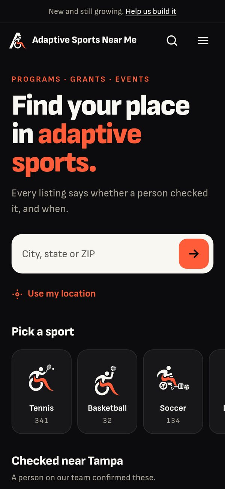
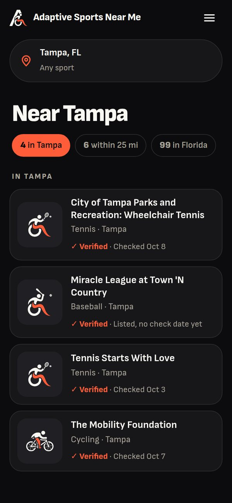
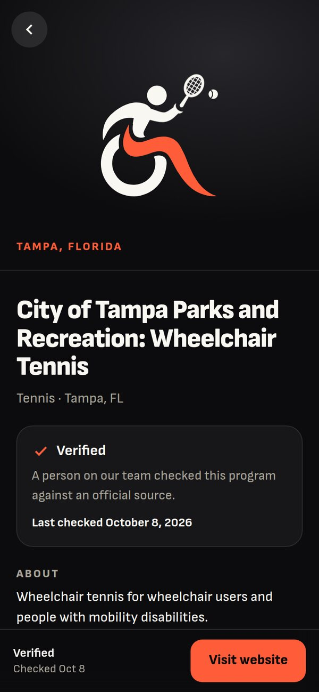
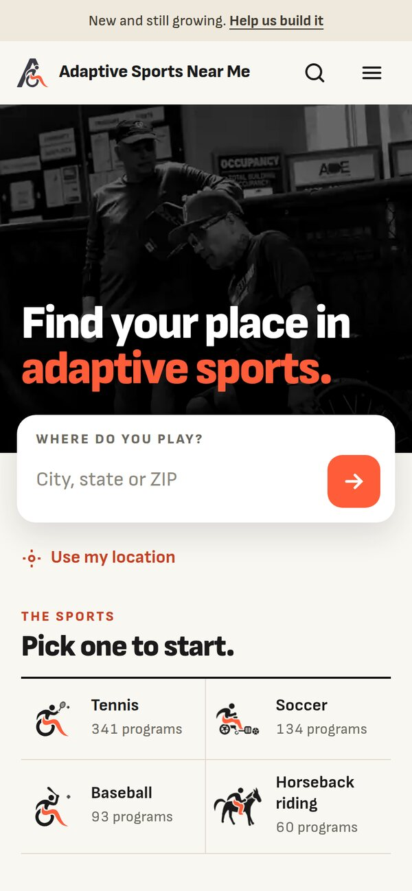
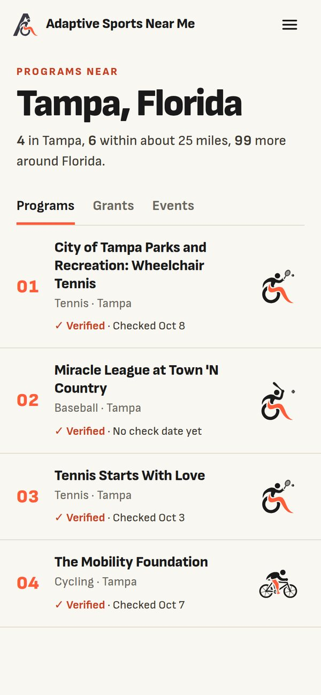
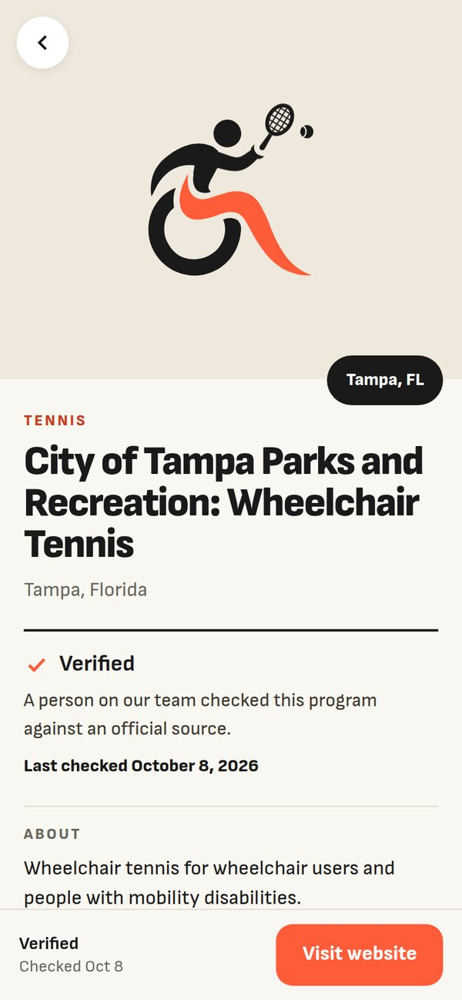
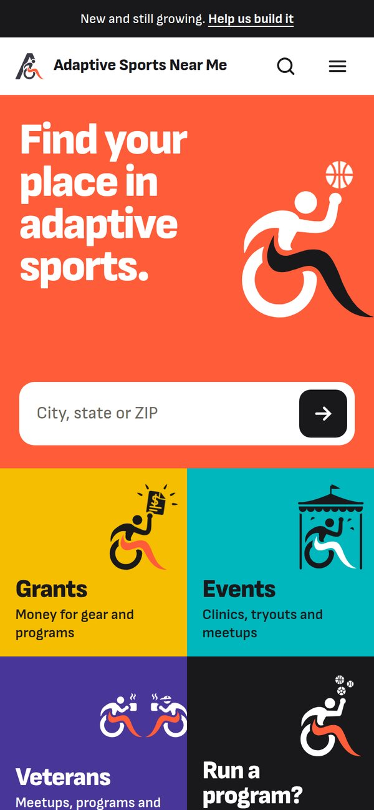
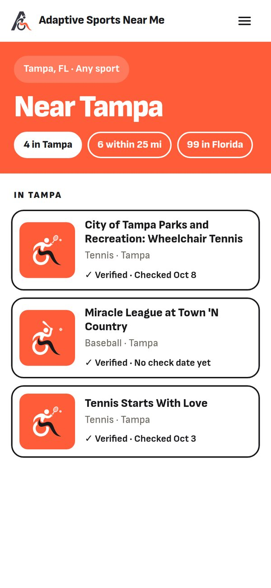
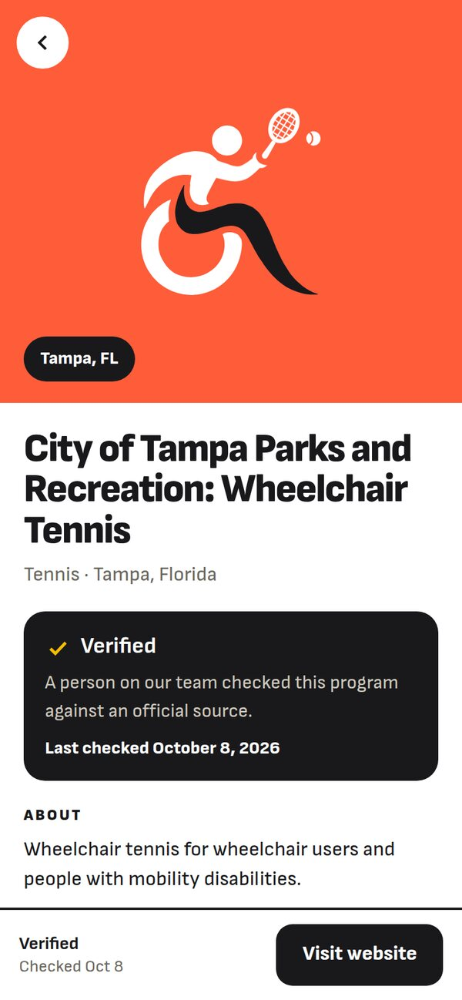

All three start from your own brand, the one adapttolife.org already wears: Sofia Sans, near black, cream, and one bold coral. Your athlete appears the way the logo draws it, with the coral leg. Each board shows the home screen, results near Tampa, and a listing. Swipe through, then open the one that pulls you in.
Built on Laura Lian's brand guide: four colours, each paired with black, and your own athlete drawings (the Transparent PNGs from Drive) in black on full colour. It works end to end on real data: home, near you, every sport and state, listings, grants, events and forms.
Open the working site Near TampaDark first, like a premium sports app. Cream athletes with the coral leg on near black, and coral only where you act. The most dramatic, and the closest to your logo.



Light and editorial, like adapttolife.org. A real black and white photo opens the page. After that it reads like a well set magazine: ink athletes, numbered results, coral for what matters. The most mature of the three.



Bold color blocks, like signs at a games venue. Each kind of thing owns one color from your brand: programs coral, grants yellow, events teal, veterans purple. Your athletes go big and white on top. The most pop.



Boards, not finished pages: three screens each, built on real listings, your official logo and the new icons. The photo in B is from adapttolife.org, here for illustration only.